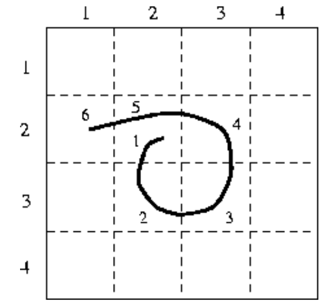

Methods of Authentication
There are many different ways of validating a user's identity on a computer system. This section will cover a few of the existing types.
Text based passwords
By far the most common authentcatio method in place acros the world is the text based password. This is the password you will be asked for on Facebook, Twitter, Amazon and almost every other website. They normally consist of letters from a-z, numbers from 0-9 and special characters, @_-)(!"£$%^&*?>
<~:;][{}. Though some websites have rules about what symbols you can use.
The passwords we test on this site are text based passwords. Try the checker here.
Biometrics
Biometrics is a matter of measuring aspets of your physical person to ensure a system you are who you claim to be. There are many different methods of performing biometrics all of them take some reading of a person's physical traits and compare these readings against information stored in a database for validation.
Eye Scan
There are two main types of eye scan.
A retina scan and an Iris scan. These scans run similar to each other but are looking for something different on each occasion.
Retina Scan: A scan is performed to observe the pattern of the blood vessels on the retina. This pattern is unique for everyone
Iris Scan: A similar scan is performed but this time it is looking at the unique patterns within a person's iris.
Finger print scan
Finger print scanners are becoming increasingly popular. One of the ways in which this technology has become increasingly popular is its increasingly common use for unlocking smartphones. However it has been used in as varied places as car security to computer systems in schools.
Face Recognition
This technology depends on the existance of a camera to take an image of the user's face. This image is compared with one stored on the computer and certain areas of the face are compared to areas in the stored image to try and determine a match. Facial recognition changes wildly depending on the particual program running the comparison.
Voice Recognition
This method relies on the device having a microphone. The user will speak some sort of passphrase or code to access the device. The device will have stored the recording and will attempt to match this voice with the stored signal.
Image based
There has been a lot of work done on using pictures for authentication rather than text based passwords. There have been many different attempts at using images but there are two main methodologies followed
Image selection
The method of image selection relies on the user having selected an image, or a series of images, and they must select this image from a group of possible options. Some set ups have the user select a rule to select an image by such as 'select the dog', or some similar rule. This methodolgy has had issues with certain options such as how many images to show at a time, what kinds of devices are capable of using this system. For example it can be difficult to display a large number of images on a smartphone and almost impossible on a smart watch. An example of image based authentication can be seen below.
Point selection
Another method of using images is to have a single fixed image and have the user select a couple of points on the image to act as a code. So when a user attempts to login they are presented the image and select their points in the order they set previously. One of the common issues with this system is that people tend to pick the same spots on an image favouring prominant features such as towers or street signs.
Pattern based
A popular method of authentication is the use of pattern based authentication. These patterns can be used in multiple techiques however, like image based authentication, there are two particularly common approaches to using this techology.
Sketch based
Sketch based authentication does not refer to actually drawing anything, that is doodle based which is the following section. Sketch based authentication refers to drawing a pattern to release a device. It is particularly common on android devices and is characterised by nine dots.
However this type of input has shown to be rather insecure as the pattern can be revealed by an act as simple as tilting it the see the finger marks on the screens.
Doodle based
Doodle based authentication is where a user draws a pattern, shape or image to unlock their device. Different versions of this kind of authentication use different rules. Some have squares and the aspect that matters is what order the squares are crossed in. 
There are other versions that require a user to sketch an image which is saved to the device and the user needs to redraw the image each time they wish to unlock the device.
Handwritting based
Another method of authentication is to use hand writting recognition. There are a couple of methods to this approach. One of these methods is to write a certain phrase when you wish to unlock your device. This writting will be compared to a version you gave the device when you set it up and if they are found to match then the devie is unlocked. Another way is similar to how image selection works. That is you will be shown a message written in a number of different styles and you need to select the one written in your hand writing. An example can be seen below
Two factor authentication
Two factor authentication is simply the approach of using more than one method of authentication to unlock a system. This can be any combination of authentication techniques such as two different biometrics scans or an image selection approach combined with a text based password.